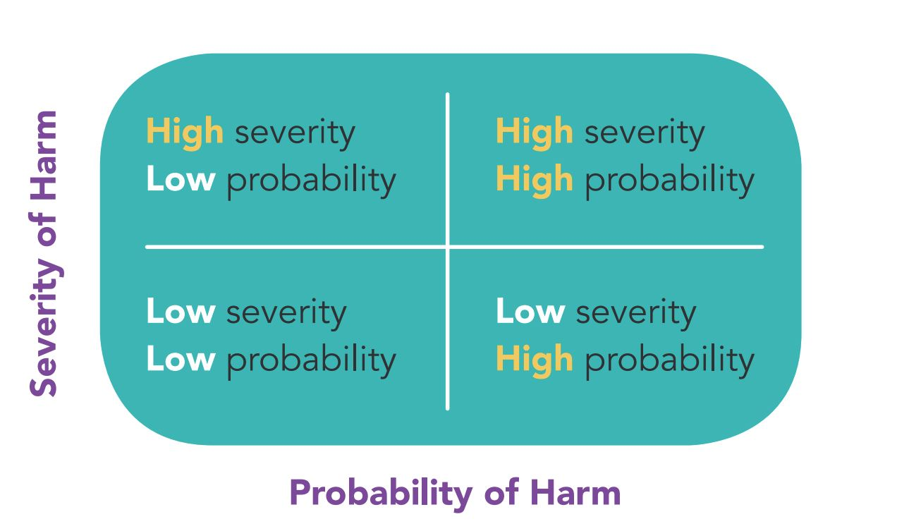
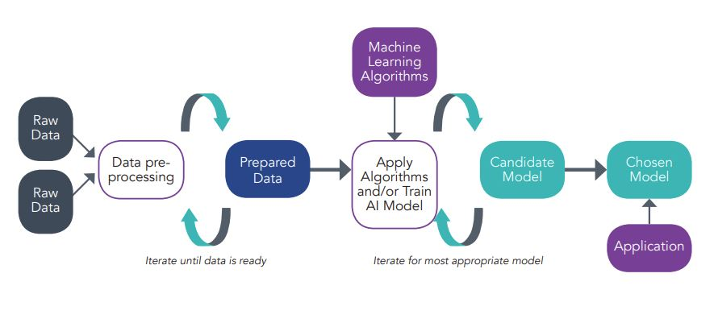

SG Model AI Governance Framework for Traditional AI
Introduction
The Model Framework (2nd Edition) was released at the 2020 World Economic Forum Annual Meeting in Davos, Switzerland. The Model Framework mainly emphasizes on four key areas such as internal governance structures and measures, human involvement in AI-augmented decision-making, operations management, and stakeholder interaction and communication. The Model Framework aims to be comprehensive, but it is constrained by its form, purpose, and practical limitations of scope. Therefore, it's important to acknowledge certain limitations or conditions when considering its application. The Model Framework is algorithm-agnostic, technology-agnostic, sector-agnostic, and scale-and-business-model-agnostic.
The objectives of the Model Framework are as follows:
- To address challenges introduced by AI such as ethical, legal, governance, discrimination, fairness, transparency.
- To proposes this second edition of voluntary Model Framework as general, ready-to-use tool to enable organizations deploying AI solutions at scale to carry out in a responsible manner.
- To provide guidance on critical issues and measures. Assist organisations to achieve the following objectives i) build stakeholder confidence in AI via organization's responsible use of AI ii) align internal policies, structures and processes with relevant accountability-based practices in data management and protection such as PDPA and OECD Privacy Principles.
- To provide ISAGO which assist organisations access the alignment of their AI governance practices and processes with the Model Framework.
- To offer consideration and recommendations to guide organizations that have decided to deploy AI technologies at scale.
The Model Framework is founded on two key guiding principles that foster trust in AI and enhance understanding of AI technologies.
- Explainable, Transparent, and Fair: Organisations using AI in decision-making should ensure that the decision-making process is explainable, transparent and fair. If perfect explainability, transparency and fairness are unattainable, then organisations should try to affirm that their use or application of AI is undertaken in a responsible manner.
- Human-centric AI Solutions: When utilizing AI to enhance human abilities, prioritizing the protection of human interests such as their well-being and safety, should be the foremost concern during the design, development and deployment of AI.
The Model Framework is designed to help organisations by integrating ethical principles into familiar and pre-existing corporate governance structures, and support by providing guidelines for the adoption of AI in an organisation.
Model AI Governance Framework - Guidance on measures
This Model Framework offers guidance on measures that organisations should adopt in critical areas to encourage the responsible use of AI such as i) Internal governance structures and measures, ii) Determining the level of human involvement in AI-augmented decision-making, iii) Operations management, and iv) Stakeholder interaction and communication. The Model Framework is designed to be flexible, allowing organisations to tailor it to their specific needs by implementing the elements that are most relevant to them. In this Model Framework, uses cases released by PDPC are also included in order to demonstrate how organisations have implemented AI governance practices which are aligned to all sections of the Model Framework.
Internal governance structures and measures
The model framework recommends features which are essential for the development of organisational internal governance structure such as
- defining clear roles and responsibilities for the ethical deployment of AI
- implementing risk management and internal controls.
For defining clear roles and responsibilities for ethical deployment of AI, there are many factors to be considered. Firstly, proper allocation to the appropriate personnel or department, as well as forming a coordinating body, is extremely important. Secondly, assigned personnel and/or departments should be fully aware of their roles and responsibilities, be properly trained and equipped with necessary resources and guidance. Finally, it suggests roles and responsibilities that can be assigned include i) using current risk management framework and applying risk control measure in order to evaluate and handle the risks of deploying AI, determine the adequate level of human involvement, manage the AI model training and selection process, ii) maintaining, monitoring, documenting, and reviewing the deployed AI models, iii) assessing communication methods and stakeholder interactions, and iv) providing appropriate training for all staff working with AI systems, with specialized training to handle AI models, and general awareness training for other employees to understand AI's benefits, risks, and limitations.
For implementing risk management and internal controls, organisations are advised to implement a robust risk management system and internal controls which handle the risks related to the deployment of selected AI Model. The measures suggested by the Model Framework include i) putting sufficient efforts to verify that datasets utilized for AI model training are suitable for their intended purpose, and to evaluate and manage the risks of inaccuracies or biases, as well as to review exceptions that arise during the model training process, ii) creating systems of monitoring, autonomous monitoring, and reporting, along with processes to ensure that the relevant management level is informed about the performance and any issues associated with the deployed AI, iii) making sure that knowledge transfer during key personnel changes in AI activities helps prevent gaps in internal governance caused by staff movement, iv) assessing the internal governance structure and measures whenever there are major changes in the organisational structure or key personnel, and v) regularly evaluating the internal governance structure and measures to maintain their relevance and effectiveness.
Determining The Level of Human Involvement in AI-Augmented Decision-Making
This section is designed to assist organisations in determining the appropriate level of human oversight in AI-augmented decision-making. The important factors that organisations should consider are i) Organisations should begin by clearly defining their objectives for implementing AI such as ensuring consistency in decision-making, boosting operational efficiency and reducing costs, or adding new product features. These objectives should be carefully weighed against potential risks in organisation's decision-making, ii) It is advisable for organisations operating across multiple countries to evaluate variations in societal norms, values and/or expectations, iii) Organisations should cautiously assess the risks for both individuals and groups because certain risks might not be evident when looking at individual cases but can become apparent when considering a group as a whole, iv) Organisations should ideally align their assessment of commercial goals against the risks of AI usage with their core corporate values, and v) Organisations should constantly identify and review risks related to their technology solutions, mitigate those risks, and maintain a response plan. The periodic review for risk impact assessment helps organisations build clarity and confidence in utilizing the AI solutions.
What are the three board approaches of human involvement in AI-Augmented decision-making? The Model Framework designs 3 approaches to categorize different degrees of human oversight in the decision-making process such as human-in-the-loop, human-out-of-the-loop, and human-over-the-loop.
- The term "Human-in-the-loop" refers to a system where humans maintain full control, with AI only offering recommendations. Decisions require active human approval, meaning the AI cannot act independently without human intervention.
- The term "Human-out-of-the-loop" refers to a system where AI operates independently without any human oversight or the ability for humans to override its decisions.
- The term "Human-over-the-loop" refers to a system where humans monitor and supervise AI operations, with the ability to intervene and take control if the AI encounters issues or undesirable outcomes. This approach allows humans to adjust parameters during the AI's operation.
The Model Framework also recommends a design framework (structured as a matrix). This design framework is organized around two key factors: the likelihood (probability) and the extent (severity) of harm that a decision made by an organization could cause to an individual or the organisation itself. These axes help assess and manage potential risks associated with decisions.
Based on sectors, the meaning of "harm" and the computation of probability (likelihood) and extent (severity) will vary. Moreover, the matrix highlights that while the probability and severity of harm are key factors in determining human oversight in AI decision-making, they are not the only factors to consider. Other factors that organisations may consider as follow: i) the nature of harm, ii) the reversibility of harm, iii) whether it is operationally feasible of meaningful for a human to be involved in a decision-making process.
For instance, in safety-critical system, organizations should ensure that a person can take control if needed. The AI system should provide enough information for the person to make informed decisions or safely shut down the system if human control is not feasible.
Operation Management
This section aims to guide organisations in implementing responsible practices during the operational phase of their AI adoption process. Also, the closed interaction between data and algorithm/model is a primary consideration for this section.
The generalized AI model development and deployment process, a continuous process of learning, is utilized in the Model Framework to express phases in implementing an AI solution. The process mentioned above follows these steps such as data preparation, algorithms, and selected model. In data preparation stage, the raw data is organized and cleaned to ensure accurate can be made. In algorithm stage, the dataset is used to train model, and algorithms may be applied. In selected model stage, the chosen model generates probability scores that can be incorporated into applications to provide predictions, make decisions, solve problems, and initiate actions.
It is beneficial for relevant departments within the organization, responsible for data quality, model training, and model selection to collaborate in establishing strong data accountability practices to make sure the success of an AI solution. These include
-
Understanding the various kinds of data lineage
There are different data lineages such as Backward data lineage, forward data lineage, and end-to-end data lineage. The important thing which organisations should maintain is a data provenance record which enables organisation to identify the data quality based on its origin and follow-up transformation, track potential error sources, update data and attribute to their origins.
-
Ensuring Quality of Data
Organisations are encouraged to assess Quality of Data such as the dataset accuracy, dataset completeness, dataset credibility, the frequency of dataset's compilation or update, the relation between dataset and the context for data collection, the integrity of the dataset, the usability of the dataset, and human involvements.
-
Minimising inherent bias
The Model Framework concentrates on inherent bias in datasets which may result in unintended outcomes such as undesired discriminatory decisions. The two kinds of bias which can be found frequently are selection bias and measurement bias. The selection bias arises when the data used to create the model does not fully reflect the real-world data or environment in which the model may receive or operate. The measurement bias occurs when data collection device systematically skews the data in a specific direction. The Model Framework suggests using a heterogenous dataset to reduce the inherent bias risks.
-
Utilizing different datasets for training, testing and validation
The Model Framework suggests using different datasets for training, testing, and validation. The training data should be used for model training, the test data should be utilized for model accuracy. Lastly, the validation data should be applied for validating the trained model.
-
Periodic reviewing and updating of datasets
The Moel Framework advises organisations to assess datasets (training, testing, validation datasets) regularly.
Additionally, the Model Framework discusses measures associated with algorithms and model such as explainability, repeatability, robustness, regular tuning, reproducibility, traceability, and auditability.
Stakeholder Interaction and Communication
The purpose of this section is to assist organisations implement well-suited steps to establish confidence in the strategies of stakeholder relationship during the deployment of AI.
-
General disclosure
The Model Framework advised that organisations are recommended to present general information about the use of AI in their services and products. If possible, that information related to AI should include its purpose, application in consumer decision-making, benefits, reasons for adoption, risk mitigation efforts, and its role in the decision-making process.
-
Policy for explanation
Organisations are advised to establish a policy detailing what explanations to offer to individuals and when to deliver them. These policies maintain consistency in communication and clearly define the roles and responsibilities of various members within the organisation.
-
Bringing explainability and transparency together in a meaningful way
Organisations are suggested that effective communication fosters trust and confidence, strengthening relationships between organisations and individuals. Companies should regularly test, access and review their stakeholder relationship strategies to ensure effectiveness, adapting them to different situations as needed.
-
Interacting with consumers
Organisations are encouraged to consider deeply when dealing with consumers such as ensuring consumers are informed that products or services, they are considering are AI-enabled, informing consumers about how AI-enabled features are expected to function during regular use, and offering additional information to explain the AI-driven decision and providing a way for consumers to contest certain decisions.
-
Option to opt-out
Organizations should carefully assess whether to offer individuals the option to opt out of using an AI product or service, considering factors like the risk to individuals, reversibility of decisions, availability and cost of alternatives, system complexity, and technical feasibility.
-
Communication channels
The Model Framework advise organisations to establish communication channels for their consumers such as feedback channels and decision review channels. The feedback channels can be utilized for customers to provide feedback or ask questions. Those channels may be overseen by the organisation's Data Protection Officer (DPO) and Quality Service Manager (QSM). In addition to current review obligations, organisations might use the decision review channels to offer a way for individuals such as affected consumers, to request a review of significant AI decisions that have impacted them.
-
Testing the user interface
Organizations should test and resolve usability issues in user interfaces before deployment to ensure they function as intended. If relevant, they should also inform users that their responses may be used to train the AI system, such as in a chatbot.
-
Easy-to-understand communications
Organisations should communicate in an easy-to-understand manner to increase transparency. There are existing tools to measure readability such as the Fry readability graph, the Gunning Fog Index, the Flesch-Kincaid readability tests, etc
-
Acceptable user policies
Organisations are encouraged to establish specific acceptable user policies (AUPs) to prevent users from intentionally inputting data that could improperly influence the model's performance or outcomes. AUPs should be defined for how individuals can interact with the AI system, including restrictions on action like reverse engineering, disabling, or disrupting the service's functionality and performance.
-
Interacting with other organisations
Organisations should implement clear approaches and strategies to get support from AI solution providers to supply the necessary information and build features that help the deploying organization align with the Model Framework. Organizations may need to gather detailed support and information from AI solution providers on various aspects, including data, model training and selection, human involvement, inferences, algorithmic presence, and measures and safeguards to mitigate biases in data and algorithms.
-
Ethical evaluation
Organisations are advised to regularly assess and update their AI governance practices aligning with evolving ethical standards and share the results with relevant stakeholders.
Model AI Governance Framework - Guidance on measures - Assumptions
There are assumptions made by the Model Framework such as
- The Model Framework intends to discuss good data management practices in general, especially for machine learning models rather than pure decision tree-driven AI models.
- The Model Framework does not tackle down the risk of catastrophic failure resulting from cyber-attacks on AI-dependent organisation.
- The Model Framework claim that although organisations decided to follow this framework, they are still required to comply with existing laws and regulations. Adopting the framework does not exempt them from their legal obligations.
- As the model framework is an accountability-based framework, organizations can show that they have implemented responsible practices in managing and protecting data. This can help them demonstrate compliance with standards like PDPA and OECD privacy principles, indicating that they are taking accountability seriously in their data-related activities.
The AI adoption process discuss in this model framework does not distinguish between business-to-consumer ("B2C"), business-to-business ("B2B"), and business-to-business-to-consumer ("B2B2C") relationships.
Compiled list of AI Principles
The compilation list of AI ethical principles, collected from various sources and not all covered in the Model Framework, are 1) Accountability 2) Accuracy 3) Auditability 4) Explainability 5) Fairness 6) Human Centricity and Well-being 7) Human rights alignment 8 ) Inclusivity 9) Progressiveness 10) Responsibility, accountability and transparency 11) Robustness and Security and 12) Sustainability.
Source
Organisations are encouraged to read original edition for Compendium of Use cases. The original publication can be found here.